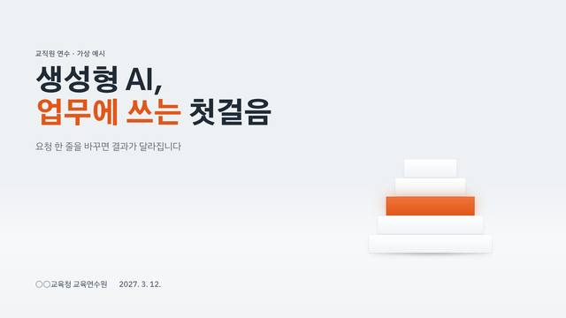
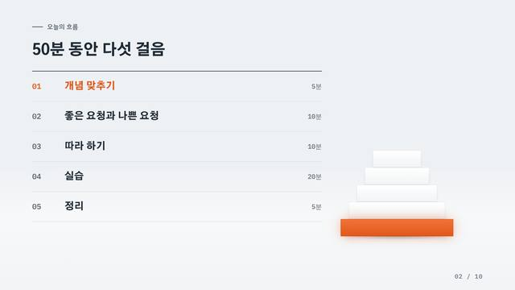
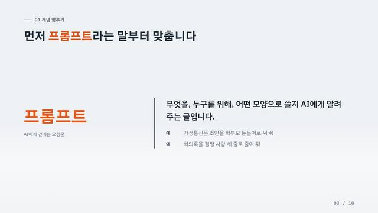
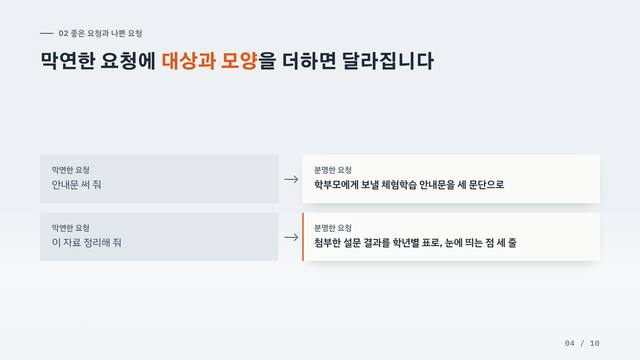
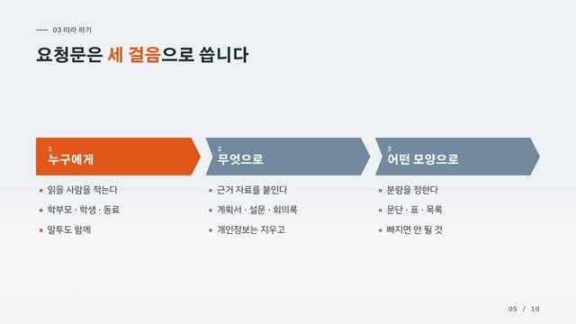
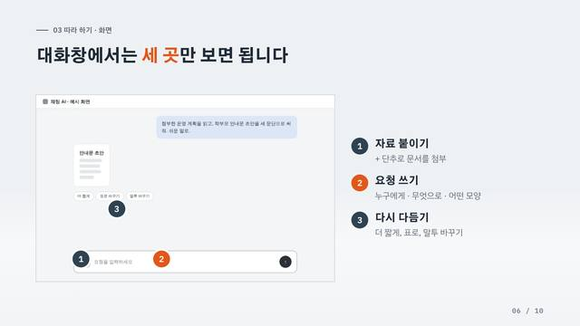
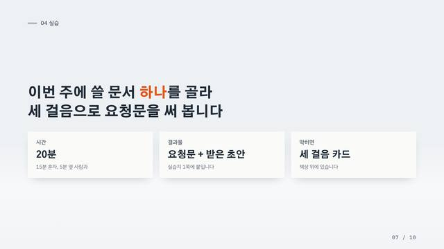
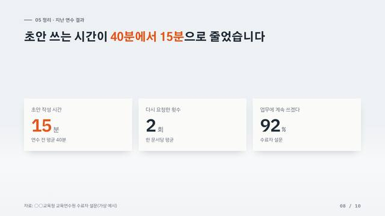
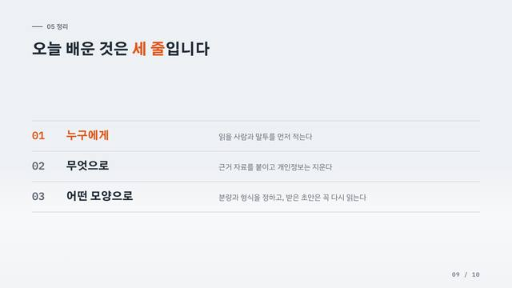
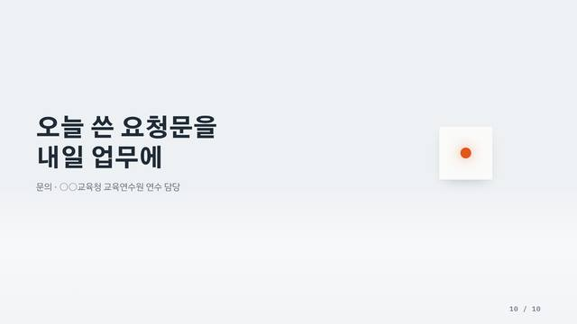

화이트 단지 모형 #19
화이트 단지 모형 #19표지만 있음 가까운 스타일: 미니멀 스튜디오
개념과 비교를 군더더기 없이 전할 때. 어떤 주제에도 무난하다
10장 세트 · 검증된 세트 10장 예시 · 다른 주제 시험 · 넘침 검사를 통과 · 확인한 날 2026-11-13
화면을 누르거나 → 키로 넘깁니다. 새 창에서 크게 보기
내려받은 파일은 글꼴 · 그림이 안에 들어 있어 인터넷 없이 열립니다. AI가 새로 만든 발표는 열 때 인터넷이 필요합니다.

1. 표지
2. 전체 흐름
3. 핵심 개념 · 정의
4. 비교
5. 순서 · 절차
6. 사례 · 화면 설명
7. 실습 과제 · 행동 안내
8. 핵심 수치 · 근거
9. 요약
10. 마무리 · 다음 행동| 역할 | 구성 | 이럴 때 | 알맞은 분량 | 넘치면 | 이럴 땐 다른 구성 |
|---|---|---|---|---|---|
| 표지 | 표지 | 발표의 이름과 분위기를 한 장으로 연다 | 제목 2줄 이하, 부제 1줄 | 부제를 뺀다 | — |
| 목차 · 전체 흐름 | 목차 | 오늘 무엇을 어떤 순서로 다루는지 먼저 보여 준다 | 3~5줄 | 큰 묶음으로 합친다 | 순서보다 날짜가 중요하면 일정(이정표)으로 |
| 일정 | (추진 일정 · 연혁 · 과정 지도) | 이정표 3~5개(.mile) 또는 줄 3~5개 × 12달(.gantt) | 분기 · 학기로 묶는다 | ||
| 핵심 개념 · 정의 | 용어 정의 | 모두가 같은 뜻으로 쓰도록 낱말 하나를 맞춘다 | 용어 1개 + 뜻 한 문장 + 예 1~2개 | 용어마다 한 장 | 정의가 아니라 주장 한 줄이면 한 문장으로 |
| 한 문장 | (목적 · 비전 · 결론처럼 한 문장이 전부인 곳) | 40자 이하 한 문장 + 받치는 말 1줄 | 받치는 말을 다음 장으로 | ||
| 비교 | 둘 비교 | 두 대상이나 전 · 후를 같은 줄에 놓고 견준다 | 2~3줄, 줄마다 왼쪽 · 오른쪽 한 짝 | 4줄부터 두 장 | 숫자가 있는 전 · 후면 전→후로, 셋 이상이면 표로 |
| 전→후 | (현행 → 개선, 사업 전 → 사업 후(숫자가 있는 짝)) | 2~3짝, 같은 기준 · 같은 단위 | 가장 큰 변화 3짝만 | ||
| 순서 · 절차 | 순서·단계 | 따라 할 차례를 단계로 나눈다 | 3~4단계, 단계마다 이름 + 할 일 3줄 이하 | 5단계부터 두 장 | 차례가 없고 갈래만 있으면 묶음 · 분류로 |
| 사례 · 화면 설명 | 화면 짚기 | 실제 화면이나 현장을 보여 주고 짚을 곳을 표시한다 | 캡처 1장 + 번호 표시 3개 이하 | 동작 하나에 한 장 | 화면이 없고 사람의 말이 있으면 인용으로 |
| 사진+글 | (사례 · 현장 사진 · 활동 모습) | 사진 1~3장, 사진마다 제목 + 한 줄 + 말 한마디 | 사진마다 한 장 | ||
| 인용 | (참여자 말 · 설문 서술 답 · 법령 조문) | 1~3개, 각 60자 이하, 말한 사람 | 가장 강한 것 하나만 | ||
| 실습 과제 · 행동 안내 | 할 일 | 청중이 지금 할 일 하나와 그 조건(시간 · 결과물)을 알린다 | 할 일 한 문장 + 조건 칸 2~3개(시간 · 결과물 · 도움) | 할 일마다 한 장 | 할 일이 아니라 생각할 거리면 질문으로 |
| 질문 | (여는 질문 · 토의 주제 · 퀴즈 · 자주 묻는 질문) | 질문 1개 + 보기 4개 이하(ol) 또는 답 1개(.a-a) | 질문마다 한 장 | ||
| 핵심 수치 · 근거 | 큰 숫자 | 주장을 받치는 숫자를 크게 보여 준다 | 1~4개, 숫자마다 단위 + 한 줄 | 가장 중요한 3개만 | 여러 해의 변화면 추이, 몫이면 구성비, 항목 비교면 막대로 |
| 막대 비교 | (항목 간 크기 비교 · 순위 · 목표 대비 실적) | 3~5줄, 한 가지 단위 | 위 4개 + 나머지 합 | ||
| 추이 | (여러 해 · 여러 달에 걸친 변화) | 3~8시점, 한 가지 값 | 시점을 줄인다 | ||
| 구성비 | (전체 중 몫 · 재원 비율) | 2~5조각, 합 100% | 작은 조각은 기타로 | ||
| 표 | (표로 된 지원 내용 · 항목 목록 · 예산 내역) | 3~5행 × 3~4열, 칸마다 1줄 | 6행부터 두 장, 또는 핵심 열만 | ||
| 요약 | 항목 | 기억할 것을 세 줄 안팎으로 줄인다 | 3~5개, 이름 + 설명 1~2줄(5개면 1줄) | 6개부터 두 장, 또는 묶음·분류로 | 한 줄이면 한 문장으로 |
| 마무리 · 다음 행동 | 맺음 | 마지막 한 문장과 문의 · 다음 일정을 남긴다 | 두 줄 문장 + 연락처 한 줄 | — | — |
| 그 밖의 구성 | 묶음·분류 | 갈래로 나누기 · 체계 · 섹션 간지 | 2~4묶음, 묶음마다 3줄 이하 | 묶음마다 한 장 | — |
| 체계 | (비전 → 전략 → 과제, 추진 체계, 조직도) | 맨 위 1 + 갈래 2~4 + 갈래마다 2~3줄 | 갈래마다 한 장, 또는 표로 | ||
| 간지 | (큰 번호가 바뀌는 자리) | 번호 + 이름 + 한 줄 | — |
아래 요청문을 복사해 발표 내용과 함께 AI 대화창에 붙여 넣으세요. 주소만 건네는 것으로는 적용이 끝나지 않습니다. AI가 구성안을 먼저 보여 주면 확인한 뒤 만들게 하세요.
제가 올린 발표 내용에 '미니멀 스튜디오' 스타일(ID: B)을 적용해 발표 HTML 파일 하나로 만들어 주세요. 1. 적용 안내 읽기: https://szxv7704-dot.github.io/design-reference-gallery/kit/B.md (디자인 규칙 · 구성별 코드 · HTML 뼈대가 들어 있습니다) 2. 완성 예시 보기: https://szxv7704-dot.github.io/design-reference-gallery/kit/B-set.html (10장: 표지 · 흐름 · 개념 · 비교 · 절차 · 화면 · 실습 · 수치 · 요약 · 마무리) 3. 유지할 것: 밝은 청백 바탕에 흰 면, 그림자 하나 / 주황은 한 장에 한 곳 / 흰 덩어리(모형대)는 표지 · 흐름 · 마무리에만 4. 바꿔도 되는 것: 강조할 낱말이나 칸 / 칸 수와 배치 5. 피할 것: 색을 더 쓰기 / 본문에 상징 부품 넣기 지킬 것: - 자료를 실제로 열어 읽은 뒤에 적용해 주세요. 주소를 열 수 없으면 읽은 척하지 말고 열 수 없다고 말해 주세요. - 먼저 장마다 "전하려는 것 · 고른 구성 · 제목"을 표로 보여 주고, 제가 확인하면 만들어 주세요. - 스타일은 하나만 쓰고, 장마다 내용에 맞는 구성을 고릅니다. 한 장에 구성 하나. - 예시에 들어 있는 기관명 · 수치 · 사례는 가상입니다. 제 발표에 가져오지 마세요. 제가 주지 않은 숫자를 지어내지 마세요. - 내용이 많으면 글자를 줄이지 말고 장을 나눠 주세요. 제 핵심 내용을 임의로 빼지 마세요.